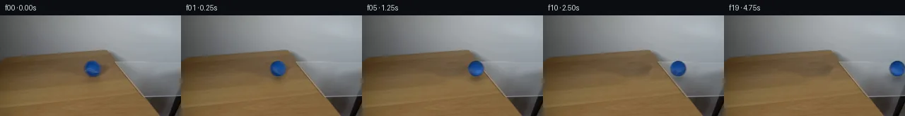

![首帧]()

Round 00
2026-11-05T09:43:58.926869+00:00像素候选变化代码 +254/−0inspection 更新
pixels 8922e078d02488cd · code 1799b9969fdc1bf8
查看本轮 generate.py 真实 diff
--- previous/generate.py
+++ current/generate.py
@@ -0,0 +1,254 @@
+"""PixelWorld-Text case_0025 generator.
+
+A blue tennis ball rolls at constant speed from the light wooden tabletop
+over a clear glass pane that rests on the table edge. Locked-off camera,
+4 fps, 20 frames, 256x144. Frame 00 is byte-identical to first_frame.png.
+
+Method (numeric pixel operations only):
+ * ball sprite, radius and shading measured from frame 00;
+ * smooth shading base B (gaussian low-pass) stays fixed in screen space,
+ fine felt albedo detail D rotates with the rolling spin (inverse
+ Rodrigues mapping about the world sideways axis projected at 21 deg);
+ * static background = Telea-inpainted frame 00 with ball + contact shadow
+ removed, re-grained from a clean donor strip of the same tabletop;
+ * contact shadow (multiplicative gaussian measured from frame 00) and a
+ faint blue glass reflection follow the ball;
+ * per frame, 5 exposure sub-samples (3 px shutter span) are alpha-composited
+ for mild horizontal motion blur.
+"""
+import numpy as np
+from PIL import Image
+import cv2
+from pathlib import Path
+import artifact_io
+
+CASE = Path(__file__).resolve().parent
+
+# ---------------------------------------------------------------- geometry
+CX0, CY0, R = 130.79, 75.69, 11.23 # ball centre / radius in frame 00
+V = 6.0 # px per frame (24 px/s)
+THETA = np.radians(21.0) # camera elevation
+AXIS = np.array([0.0, -np.sin(THETA), np.cos(THETA)]) # world +Y in cam coords
+SH_SX, SH_SY, SH_RX, SH_RY, SH_AMP = 131.0, 89.0, 10.0, 7.5, 0.25
+GLASS_M, GLASS_C = 0.813, 107.3 # pane left edge: x = m*y + c
+FPS_N = 20
+
+
+def load():
+ return np.array(Image.open(CASE / "first_frame.png").convert("RGB"))
+
+
+# ------------------------------------------------------------- sprite work
+def build_sprite(img):
+ """Return filled ball RGB (HxWx3 float), detail D and smooth base B
+ inside the measured disk, plus coverage alpha parameters."""
+ h, w = img.shape[:2]
+ yy, xx = np.mgrid[0:h, 0:w]
+ dist = np.hypot(xx - CX0, yy - CY0)
+ disk = dist <= R - 0.5
+
+ # empirical foreground colour: measured pixels inside the solid core
+ filled = img.astype(np.float32).copy()
+ # decontaminate the rim ring by pulling colour radially from R-1.6
+ angles = np.arctan2(yy - CY0, xx - CX0)
+ rim = (dist > R - 1.6) & (dist <= R + 1.8)
+ ry_ = CY0 + (R - 1.6) * np.sin(angles[rim])
+ rx_ = CX0 + (R - 1.6) * np.cos(angles[rim])
+ x0 = np.floor(rx_).astype(int); y0 = np.floor(ry_).astype(int)
+ fx = rx_ - x0; fy = ry_ - y0
+ src = (img[y0, x0].astype(np.float32) * (1 - fx[:, None]) * (1 - fy[:, None])
+ + img[y0, x0 + 1].astype(np.float32) * fx[:, None] * (1 - fy[:, None])
+ + img[y0 + 1, x0].astype(np.float32) * (1 - fx[:, None]) * fy[:, None]
+ + img[y0 + 1, x0 + 1].astype(np.float32) * fx[:, None] * fy[:, None])
+ filled[rim] = src
+
+ # smooth shading base: normalised gaussian blur over the disk
+ solid = (dist <= R + 0.5).astype(np.float32)
+ fcol = np.where(disk[:, :, None], filled, 0.0)
+ num = cv2.GaussianBlur(fcol, (0, 0), 2.2, borderType=cv2.BORDER_CONSTANT)
+ den = cv2.GaussianBlur(solid, (0, 0), 2.2, borderType=cv2.BORDER_CONSTANT)[:, :, None]
+ base = num / np.maximum(den, 1e-3)
+ detail = np.clip(filled / np.maximum(base, 1e-3), 0.55, 1.6)
+ return filled.astype(np.float32), base.astype(np.float32), detail.astype(np.float32), dist
+
+
+def tune_alpha(img, filled, base, detail, dist):
+ """Fit the geometric coverage ramp against observed rim pixels in
+ frame 00 (alpha composite of rendered phi=0 ball over the local
+ background estimate taken just outside the disk)."""
+ h, w = img.shape[:2]
+ yy, xx = np.mgrid[0:h, 0:w]
+ bg = np.zeros_like(img, dtype=np.float32)
+ # local background = radial sample at R+2.4 (wood around the ball)
+ ang = np.arctan2(yy - CY0, xx - CX0)
+ ring = (dist > R - 1.5) & (dist < R + 1.2)
+ by = CY0 + (R + 2.4) * np.sin(ang[ring])
+ bx = CX0 + (R + 2.4) * np.cos(ang[ring])
+ x0 = np.clip(np.floor(bx).astype(int), 0, w - 2)
… diff truncated; 167 more lines …